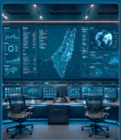
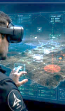
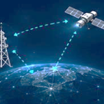
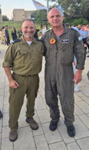

השקעה מבוקשת תמורת אחזקה שתוגדר במשא ומתן.
תקציר מנהלים להשקעהאוגוסט 2026
הצעת השקעה אסטרטגית
מערכת אווירית אחת.
שותפות אסטרטגית אחת.
כניסה מוקדמת להשקעה במיזם להגנת גבולות: פלטפורמת כטמ״ם כבדה ורב־משימתית המחברת שהייה ממושכת בגזרה, חימוש משוטט, מטען קינטי אווירי, AI ותחנת שליטה וירטואלית — למערכת נשק אווירית אחת.
מסווג סודי מסחרי · לעיון ארית בלבד
יעד: סדרת טיסות ניסוי לאחר הדגמה קרקעית משולבת.
אפשרויות חימוש, לרבות חימוש משוטט, כחלק מסל החימוש של המערכת.
ארית אינה נכנסת להשקעה פיננסית בלבד, אלא לשותפות אסטרטגית סביב מערכת אווירית היכולה לשאת, להפעיל ולמנף חימושים מתקדמים.
המערכת
החלטה מהירה יותר.
תמונה מלאה יותר.
קיצור זמן הגילוי, קבלת ההחלטה ונטרול האיום באמצעות פלטפורמה, קישוריות, תחנת שליטה וממשק הפעלה אחד.
- הפעלה אינטואיטיבית באמצעות צוות קטן
- מיזוג חיישנים ותמונת מצב מלאה בזמן אמת
- ארכיטקטורה מודולרית, פתוחה ויתירה
- תקשורת מאובטחת עם גיבוי LOS ו־SATCOM / Starlink
- אדם בלולאת ההחלטה לכל פעולה קריטית



פלטפורמה אוויריתEO/IR ומגוון חימושיםAI Edge וטייס אוטומטיבקרה וקישוריות
ניסיון מוכח
הסבת מטוסים מאוישים לפלטפורמות בלתי מאוישות אינה תקדים.
הניסיון העולמי מציג כמה מסלולים אפשריים להסבה, אינטגרציה ושינוי תצורה — ממטוסים קלים ועד פלטפורמות מנהלים.
Diamond DA 42Burt Rutan · Long‑EZPiaggio · Avanti 180


החיבור לארית
מוצר משותף עם נתיב ניסויים ויכולת צמיחה.
חימוש משוטט, אלקטרוניקה, בקרה ויכולת ייצור מתחברים לפלטפורמה אווירית מלאה — ולא למוצר בודד.
חימוש משוטט כמנוע צמיחה
נשיאה, שיגור וניהול מהאוויר; הארכת טווח וגמישות הפעלה; יכולת מוצר משותף עם ארית.
אלקטרוניקה ובקרה
מחשב משימה, חיישנים וקישוריות; מרעומים, בקרה וממשקי חימוש; אינטגרציה ביטחונית כחול־לבן.
פלטפורמה מתמידה ורב־משימתית
שהייה בגזרה, מטען קינטי, חימושים נוספים, תא מטען פנימי ונקודות קשיחות.
ערך לקוח ברור
מענה לאיומים רבים וזולים, עלות פעולה נמוכה יותר ותגובה מוקדמת לפני קו המגע.


ההזדמנות היא להפוך יכולות חימוש ואלקטרוניקה לחלק ממערכת אווירית שלמה עם סיפור מבצעי, נתיב ניסויים ויכולת צמיחה מעבר למוצר בודד.
תוכנית עבודה
18 חודשים מהשקעה לסדרת טיסות ניסוי.
ההשקעה מיועדת לייצר התקדמות מוחשית: מדגים קרקעי, אינטגרציה וסדרת טיסות הדגמה עבור לקוחות.
- 0–3 חודשים
יישור קו והשקעה
משא ומתן טכני ומסחרי, Term Sheet והשקעה מול אבני דרך, והגדרת שיתוף הפעולה.
- 3–6 חודשים
רכישת פלטפורמות ותכן
AlonS לישראל, הקפאת ממשקים ותצורה, ותכן מערכת VR, AI ותקשורת.
- 6–12 חודשים
הדגמה קרקעית משולבת
GCS/VR, קישוריות ו־AI Edge; שילוב AKP וחימוש משוטט; בדיקות קרקע וסימולציות.
- 12–18 חודשים
סדרת טיסות ניסוי
הרחבת מעטפת, אימות שליטה ותקשורת, אימות מטענים והחלטת המשך עם לקוח עוגן.
שימושי הכספים
פלטפורמות והסבה · אינטגרציה · תחנת שליטה · תקשורת · AI ובטיחות · AKP · חימוש משוטט · ניסויים ותיעוד
היעד מהפגישה
עניין אסטרטגי עקרוני · צוות בדיקה משותף ל־30 יום · מסגרת שיתוף פעולה · עקרונות השקעה ואחזקות
המייסדים וההנהלה
ניסיון מבצעי. הנדסה עמוקה. יכולת ביצוע.
צוות היודע לחבר צורך מבצעי, פלטפורמה, מערכת AI ולקוח ביטחוני למוצר מורכב ובר־ניסוי.
אביאל אלוני מייסד שותף ומנכ״ל
סא״ל במיל׳ בטייסת כטמ״ם. למעלה מ־30 שנות ניסיון בהפעלה מבצעית, ניהול לקוחות ביטחוניים והובלת פרויקטים במשרד הביטחון ובתעשיות הביטחוניות.
קובי בלנק מייסד שותף וסמנכ״ל טכנולוגיות
רס״ן במיל׳ בטייסת כטמ״ם. מעל 30 שנות ניסיון בהנדסת מכונות, תוכנה, מערכות בלתי מאוישות ואינטגרציה.
דורון אלוני מייסד שותף וסמנכ״ל AI
כ־30 שנות ניסיון בהייטק, DevOps, תשתיות תוכנה, AI ודאטה; מוביל ולידציה, אוטומציה ותמיכה בהחלטות מפעיל.


